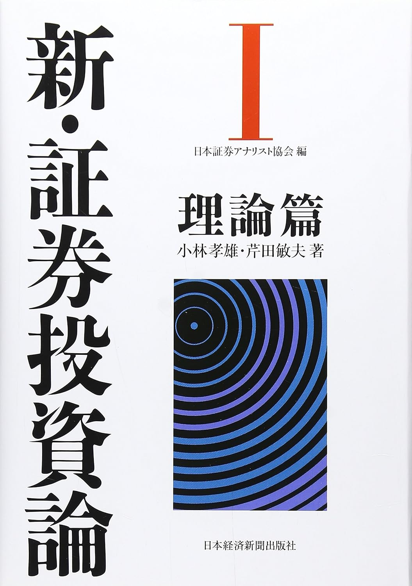

畠田 証券投資論
1 はじめに

この資料は，神戸大学経営学研究科の畠田先生が立命館大学で開講した「証券投資論」という科目の資料をもとに，ファイナンスの基礎を学習するためのノートとして松浦が再編集したものです。 この資料の元ネタは，証券アナリスト協会が証券アナリスト試験の教材として推奨している教科書
- 小林孝雄，芹田敏夫 (2009) 「新・証券投資論 I 理論編」日本経済新聞社
です。 この教科書は，ファイナンスの基礎理論を体系的に学ぶことができる良書ですので，この資料とともに教科書も随時参照するようにしてください。 ファイナンスの基礎を理解するためには，確率論と統計学の基礎知識が必要です。そのための参考書として以下のものがオススメです。
- 石井俊全 著 (2018) 「1冊でマスター 大学の統計学」 技術評論社
- 木村俊一，鈴川晶夫，古澄英男 (2003) 「確率と統計 – 基礎と応用」 朝倉書店
- 森棟公夫・照井伸彦・中川満・西埜晴久・黒住英司 著「統計学」 有斐閣
- 西山慶彦・新谷元嗣・川口大司・奥井亮 著 (2019) 「計量経済学」 有斐閣
- 浅野皙・中村二朗 著 (2009)「計量経済学 第2版」有斐閣
- 山本拓 (2022)「計量経済学 第2版」 新世社
1は統計学の基礎を学ぶ教科書・問題集となっていて，独学に最適な教科書です。 2と3は統計学の基礎をしっかり学びたい人向けの，数学的な厳密性を重視した教科書です。 4は計量経済学の基礎から応用まで幅広く，かつ厳密に学ぶための教科書です。 5と6は4と同様に計量経済学の基礎を学ぶ教科書ですが，5はパネルデータ分析に詳しく，6は時系列分析に詳しいです。
この教科書では触れられていない行動ファイナンスの知識については，
- Shefrin, H. (2002) “Beyond Greed and Fear”, Oxford University Press, Chapter 1-4. (鈴木一功訳「行動ファイナンスと投資の心理学」東洋経済新報社，2005年)
- Montier, J, (2002) “Behavioural Finance: Insights into irrational minds and markets”, Wiley & Sons, Chapter 1. (真壁昭夫，川西諭、栗田昌孝訳「行動ファイナンスの実践 – 投資家心理が動かす金融市場を読む—」，ダイヤモンド社，2005年)
で補います。
1.1 1. 授業のテーマと到達目標
ファイナンスは，大きく分けると，金融市場(証券市場)とコーポレートファイナンスの分野に大別されます。 金融市場は金融資産への投資問題に焦点を向けることで，リターンとリスクの関係，ポートフォリオ選択，資産の価格づけ，リスクマネジメントを明らかにしようとする分野です。 本講義では，先ず，それらの内容について詳細に解説を行うことで，伝統的な証券投資論の考え方を理解します。 そして，その上で，最近，積極的に議論されている行動ファイナンスの考え方についての解説を行います。